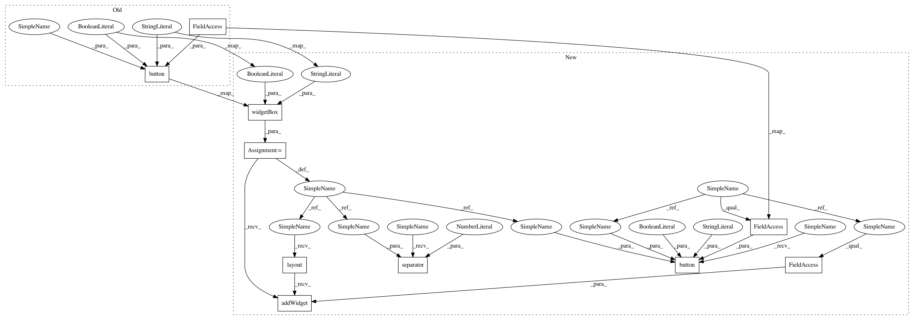

4fbb95bb429324b398da41061d24c46834719c24,Orange/widgets/classify/owsvmclassification.py,OWSVMClassification,__init__,#OWSVMClassification#,45
Before Change
gui.spin(box, self, "max_iter", 0, 1e6, 100,
label="Iteration Limit", checked="limit_iter")
gui.button(self.controlArea, self, "&Apply",
callback=self.apply, default=True)
self._on_kernel_changed()
self.apply()
After Change
max_iter = settings.Setting(100)
limit_iter = settings.Setting(True)
def __init__(self):
super().__init__()
self.data = None
self.preprocessors = None
box = gui.widgetBox(self.controlArea, self.tr("Name"))
gui.lineEdit(box, self, "learner_name")
form = QtGui.QGridLayout()
typebox = gui.radioButtonsInBox(
self.controlArea, self, "svmtype", [],
box=self.tr("SVM Type"),
orientation=form,
)
c_svm = gui.appendRadioButton(typebox, "C-SVM", addToLayout=False)
form.addWidget(c_svm, 0, 0, Qt.AlignLeft)
form.addWidget(QtGui.QLabel(self.tr("Cost (C)")), 0, 1, Qt.AlignRight)
c_spin = gui.doubleSpin(
typebox, self, "C", 1e-3, 1000.0, 0.1,
decimals=3, addToLayout=False
)
form.addWidget(c_spin, 0, 2)
nu_svm = gui.appendRadioButton(typebox, "ν-SVM", addToLayout=False)
form.addWidget(nu_svm, 1, 0, Qt.AlignLeft)
form.addWidget(
QtGui.QLabel(self.trUtf8("Complexity bound (\u03bd)")),
1, 1, Qt.AlignRight
)
nu_spin = gui.doubleSpin(
typebox, self, "nu", 0.05, 1.0, 0.05,
decimals=2, addToLayout=False
)
form.addWidget(nu_spin, 1, 2)
box = gui.widgetBox(self.controlArea, self.tr("Kernel"))
buttonbox = gui.radioButtonsInBox(
box, self, "kernel_type",
btnLabels=["Linear, x∙y",
"Polynomial, (g x∙y + c)^d",
"RBF, exp(-g|x-y|²)",
"Sigmoid, tanh(g x∙y + c)"],
callback=self._on_kernel_changed
)
parambox = gui.widgetBox(box, orientation="horizontal")
gamma = gui.doubleSpin(
parambox, self, "gamma", 0.0, 10.0, 0.0001,
label=" g: ", orientation="horizontal",
alignment=Qt.AlignRight
)
coef0 = gui.doubleSpin(
parambox, self, "coef0", 0.0, 10.0, 0.0001,
label=" c: ", orientation="horizontal",
alignment=Qt.AlignRight
)
degree = gui.doubleSpin(
parambox, self, "degree", 0.0, 10.0, 0.5,
label=" d: ", orientation="horizontal",
alignment=Qt.AlignRight
)
self._kernel_params = [gamma, coef0, degree]
box = gui.widgetBox(self.controlArea, "Optimization parameters")
gui.doubleSpin(box, self, "tol", 1e-7, 1.0, 5e-7,
label="Numerical Tolerance")
gui.spin(box, self, "max_iter", 0, 1e6, 100,
label="Iteration Limit", checked="limit_iter")
box = gui.widgetBox(self.controlArea, True, orientation="horizontal")
box.layout().addWidget(self.report_button)
gui.separator(box, 20)
gui.button(box, self, "&Apply", callback=self.apply, default=True)
self._on_kernel_changed()
self.apply()
In pattern: SUPERPATTERN
Frequency: 6
Non-data size: 10
Instances
Project Name: biolab/orange3
Commit Name: 4fbb95bb429324b398da41061d24c46834719c24
Time: 2015-12-04
Author: janez.demsar@fri.uni-lj.si
File Name: Orange/widgets/classify/owsvmclassification.py
Class Name: OWSVMClassification
Method Name: __init__
Project Name: biolab/orange3
Commit Name: 3dfb894003bf551e1df403d075258e52b65f214f
Time: 2015-10-30
Author: janez.demsar@fri.uni-lj.si
File Name: Orange/widgets/classify/owsvmclassification.py
Class Name: OWSVMClassification
Method Name: __init__
Project Name: biolab/orange3
Commit Name: 4fbb95bb429324b398da41061d24c46834719c24
Time: 2015-12-04
Author: janez.demsar@fri.uni-lj.si
File Name: Orange/widgets/classify/owrandomforest.py
Class Name: OWRandomForest
Method Name: __init__
Project Name: biolab/orange3
Commit Name: 3dfb894003bf551e1df403d075258e52b65f214f
Time: 2015-10-30
Author: janez.demsar@fri.uni-lj.si
File Name: Orange/widgets/classify/owclassificationtree.py
Class Name: OWClassificationTree
Method Name: __init__
Project Name: biolab/orange3
Commit Name: 3dfb894003bf551e1df403d075258e52b65f214f
Time: 2015-10-30
Author: janez.demsar@fri.uni-lj.si
File Name: Orange/widgets/classify/owrandomforest.py
Class Name: OWRandomForest
Method Name: __init__
Project Name: biolab/orange3
Commit Name: 4fbb95bb429324b398da41061d24c46834719c24
Time: 2015-12-04
Author: janez.demsar@fri.uni-lj.si
File Name: Orange/widgets/classify/owclassificationtree.py
Class Name: OWClassificationTree
Method Name: __init__